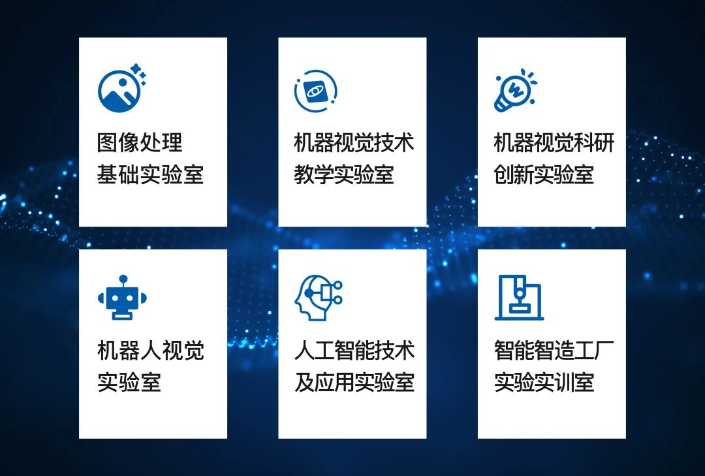
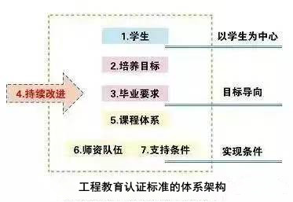
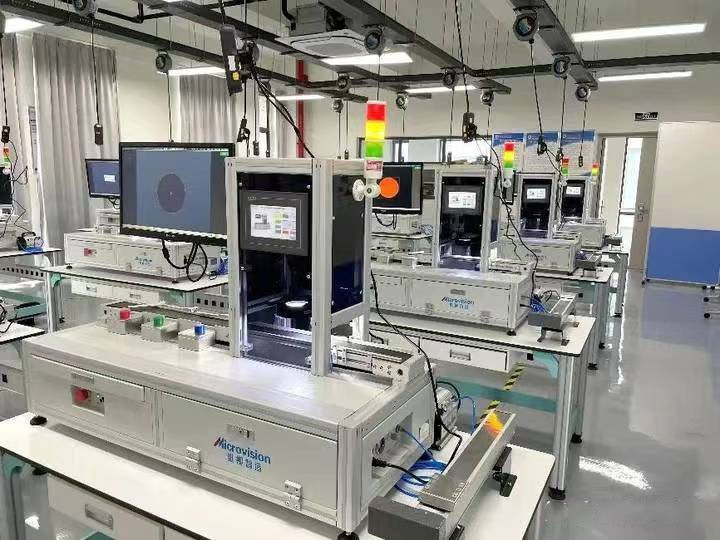
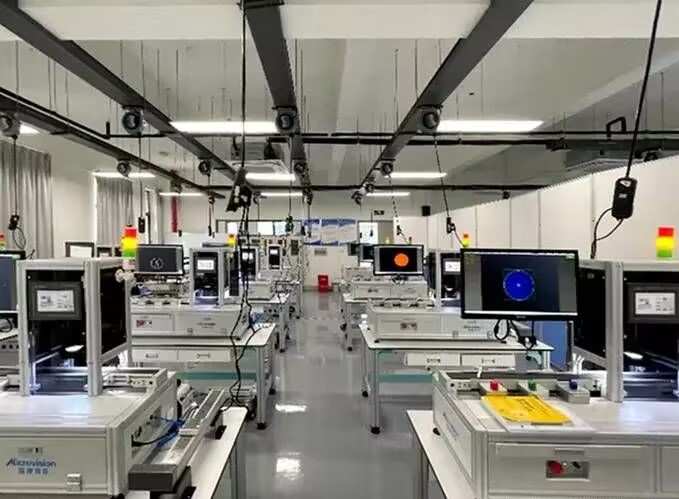
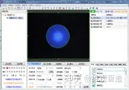
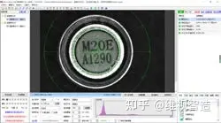
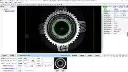
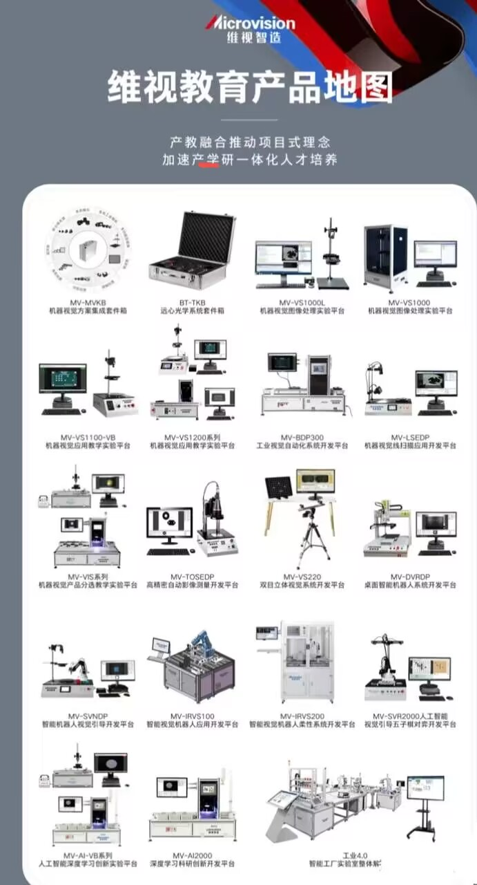

智能制造行业转型趋势下，院校如何做好产教融合？

一、项目背景
近期，维视教育又与安徽某高校达成合作，为该高校成功搭建了机器视觉实验室。
为促进专业人才培养质量提高和持续改进，保证专业能够培养出符合标准的合格毕业生，客户提出希望建造符合工程教育认证、满足日常教学的机器视觉实验室，从而完善基于OBE的课程体系，以学生能力达成为导向开展教学、建设和学生指导有针对性的推进专业持续改进。针对此项需求，维视基于20年来深入产线的实战经验，对院校教研团队细分需求的深刻理解，提供了全面专业的机器视觉实验室解决方案。

二、维视教育 把流水线搬进实验室


维视教育以MV-VIS系列机器视觉分选教学实验平台为核心设备，打造了集实验、教学、科研于一体的机器视觉实验室。该实验平台搭建了工业级应用环境，设计了尺寸检测、特征分选、字符分选、颜色分选、物料智能传递、数据通讯、柔性系统搭建等多个方向的教学实验，为高校的新工科类人才培养和科研建设带来了四大助益：
工业级场景再现 让教学贴近实际
平台模拟工业现场流水线环境，通过智能视觉分选系统对物料进行识别、检测及分类，基于智能视觉通讯模块与自动化控制相结合控制气缸，将物料分类到对应的料盒中。平台采用光纤传感器，可准确感知产品位置触发相机拍照，该系列平台将运动控制与视觉有机结合，依托功能丰富的 VisionBank AI软件，可扩展出不同的物料分选方案。
“项目式教学” 培养工程师型人才
整个项目式教学过程中采用企业实际工作项目为实训内容，让学生始终处于主导地位。设计了尺寸检测、特征分选等多个方向的教学实验，再配套内容丰富的实验指导手册及产品使用手册，使得学生可以快速的掌握机器视觉的系统构建、软件工程文件的编写、视觉与 PLC 之间的通讯、视觉项目的应用场景、开发流程、落地实施。让学生走进工业现场，项目式学习，真正的具备解决工业实际项目的能力。
让成果从“实验室”跃上“生产线”
维视教育将自身在工业领域技术研发和转化层面的优势与高校的科研实力进行深度融合，配合学院进行专业方向实验课程的规划和开展以及工程认证的工作推进。可以直接在该设备上动态验证视觉项目与整个项目的开发过程、项目实施结果，满足老师研究横向课题的需求。适有助于推动高校科研技术与实际应用的结合，将企业需求与科研方向的互相渗透，助力科研成果转化。
目标导向培养，助力专业工程教育认证
除了教学产品和资源配套之外，维视教育与学校进行产学研合作项目合作、提供配套的实践课堂联合授课等，按照产业和岗位实际需求来搭建人才模型及课程设置，满足人才的多元成长与多样化发展需求。符合专业工程认证体系对人才的要求，使学生能够具备解决“复杂工程问题”的能力，能够适应、支撑、引领新经济、新技术、新产业、新业态、新商业模式的发展。
三、应用场景
用于教学、科研横向课题工程应用；创新大赛产品设计。

颜色识别分拣

工件型号分拣

齿轮类型分拣

维视教育依靠强大的技术底座，数千一线企业案例积累和丰富的校企合作经验，运用光学成像、人工智能、图像处理、模式识别等技术推出了“院校实验室建设”系列产品。该系列产品应用了智能制造领域的成熟技术，是完全贴合院校教学科研的智能制造解决方案
维视智造股份
校企合作是高校与企业联合构建的进行资源共享、优势互补的双赢合作模式，未来，维视教育也希望与更多高校展开合作，打造紧跟时代、符合学校、教学与应用双赢的实验室，助力新工科人才培养。